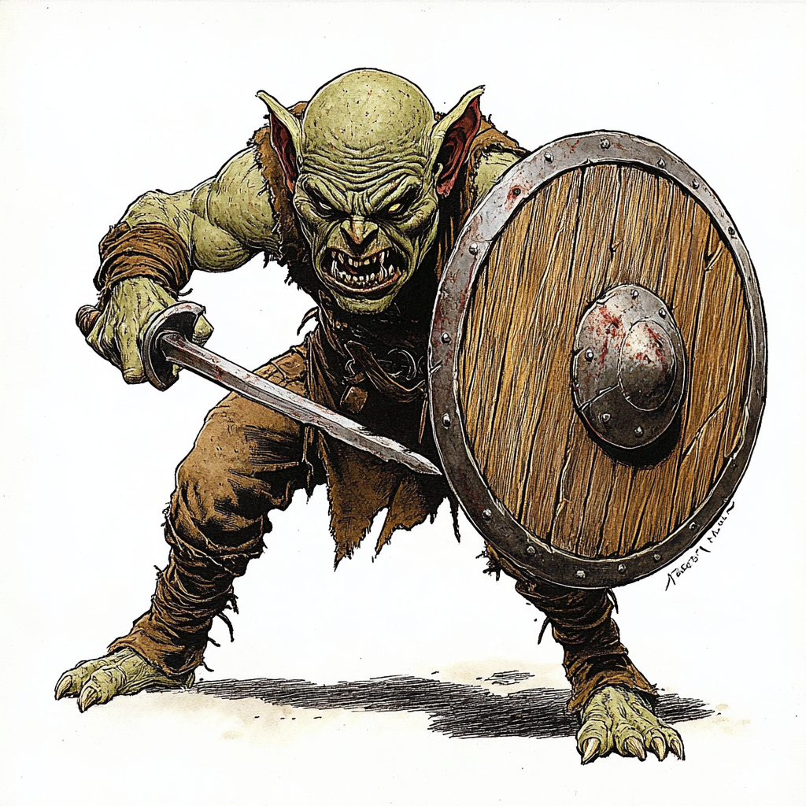
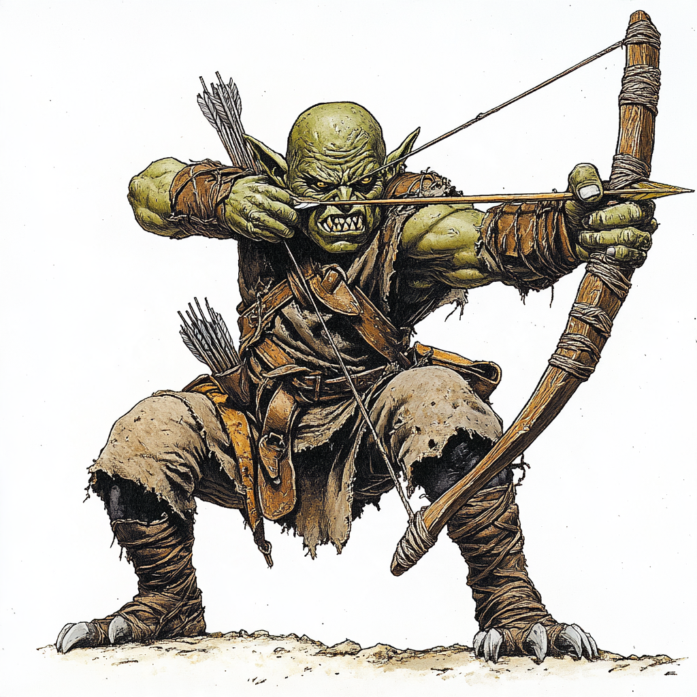

★☆☆
INIT: 6
Goblin-Späher
◈ Standard · Schwarm / Nahkampf

»Fliehende, feige Halsabschneider der Banden. Sie lauern in dunklen Felsspalten und greifen bevorzugt im Rudel aus dem Hinterhalt an.«
❤️ Leben3
🛡️ Abwehr5
👟 Bew.4
⚔️ Angriff+1 (1D)
📜 Sonderregel
Feigheit: Fällt der Goblin auf 1 LP, bricht seine Moral und er flieht mit voller Bewegung (4 Felder) vom nächsten Helden weg.
⚔️ Verhalten
- 1.Rudel-Taktik: Grenzt ein Verbündeter an einen Helden, rückt er auf diesen Helden vor (erhält Vorteil).
- 2.Angriff: Rostdolch • Würfle 1d6 + 1 gegen VT (erzielt 1 Schaden).
- 3.Rückzug: Bei 1 Rest-LP flieht er außer Reichweite.

★☆☆
INIT: 4
Goblin-Schütze
◈ Standard · Fernkämpfer

»Schießt mit gezackten Knochenpfeilen aus dem Schatten. Feige im direkten Nahkampf, doch heimtückisch und tödlich auf Distanz.«
❤️ Leben2
🛡️ Abwehr4
👟 Bew.3
⚔️ Fernk.+2 (1D)
📜 Sonderregel
Abstand halten: Steht ein Held angrenzend, weicht er 2 Felder zurück (provoziert keinen Gelegenheitsangriff) und schießt.
⚔️ Verhalten
- 1.Zielwahl: Visiert den Helden mit den wenigsten LP in Sichtlinie an (Reichweite 4).
- 2.Schuss: Knochenbogen • 1d6 + 2 gegen VT (erzielt 1 Schaden).
- 3.Ausweichen: Zieht sich bei Bedrängnis in hintere Deckung zurück.